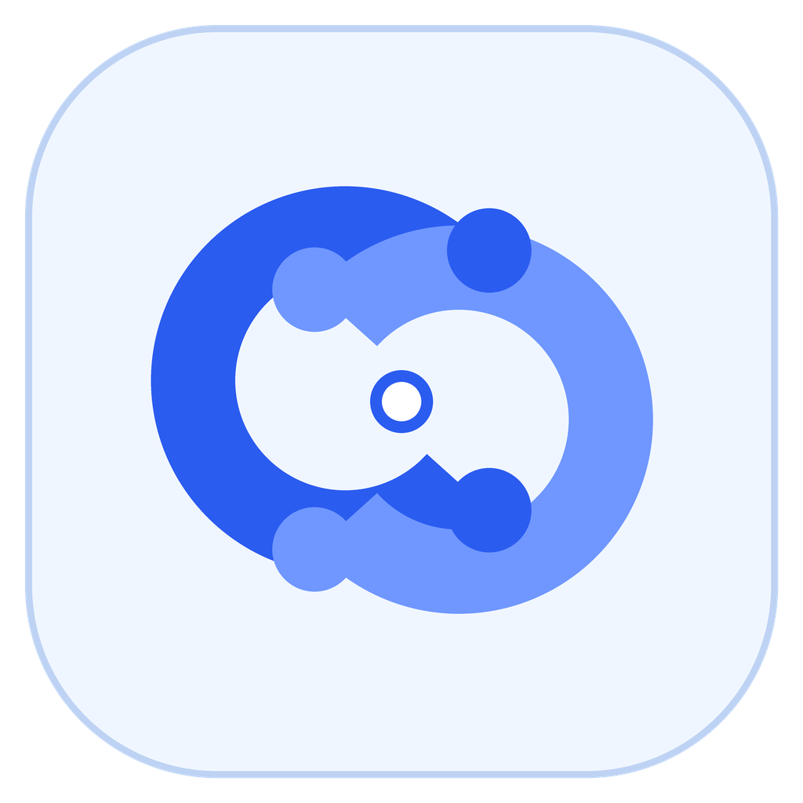

Relevant people, enough context.
See what someone is building, what they can help with, and what kind of connection they are actually open to.

lyfe connectTODAY'S INTRODUCTIONS
A small, relevant set of collaborators, peers, and builders. No follower race, no engagement bait, and no pressure to collect contacts you will never speak to.
ACTIVE SIGNALS
FROM THE NETWORK
A visual feed for build logs, research notes, questions, and open calls, without the personal branding theatre.
See what someone is building, what they can help with, and what kind of connection they are actually open to.
Respond to a project, question, or idea they shared. A useful opening beats a generic connection request.
Turn a promising thread into a call, reading group, feedback exchange, or project and carry the next step into Lyfe.
CONNECTIONS
Keep the people, context, and private outreach drafts that matter. In this preview, nothing is sent to a real person.
SHARED WORKSPACE
Create lightweight project pages for briefs, decisions, next steps, and collaborators. Send only the action you approve into Lyfe.
CONNECT × LYFE
Only the task title and note you approve are handed to Lyfe. Your network profile, filters, circles, and outreach drafts stay in Connect.
SMALL TOPIC COMMUNITIES
Circles are focused spaces for exchanging work, finding collaborators, and learning in public without turning every discussion into a broadcast.
YOUR SIDE OF THE CONVERSATION
Keep it useful and human. Every field is optional in this local preview and stays in this browser.
PRIVACY CHOICES
Connect can reuse only the profile details you approve in Lyfe. It never copies your tasks, notes, learning, or private workspace. You can pause introductions, leave circles, or erase the preview at any time.